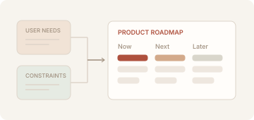
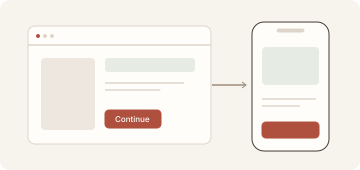
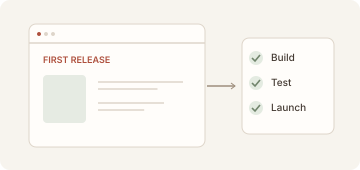
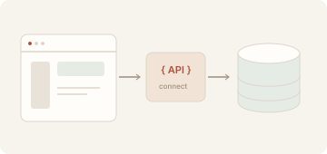
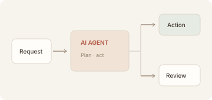
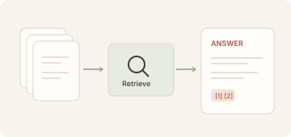
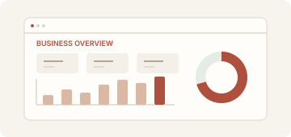
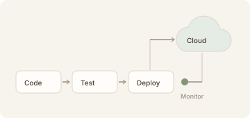
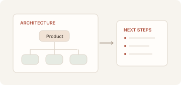

Product discovery
Problem definition, user research, product roadmap.

Problem definition, user research, product roadmap.

User flows, interactive prototypes, design systems.

Core product features, built and tested for launch.

Web apps, SaaS platforms, internal tools and APIs.

Copilots and workflows that handle repetitive tasks.

Answers grounded in your documents and business data.

Data pipelines, dashboards and business reporting.

Deployment, CI/CD, monitoring and ongoing improvement.

Architecture reviews, technical planning and fractional CTO support.